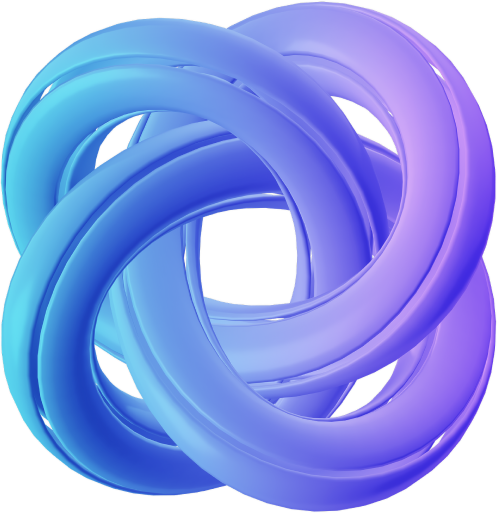
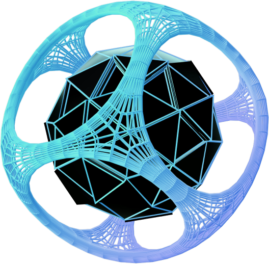

![]()
New Paradigm is live! Bridge ETH or USDC to earn PENTA yield and Manta Token Rewards
Explore More 
Manta Pacific
The first EVM-native modular execution layer for wide ZK applications adoption, with Manta’s universal circuit and zk interface.
Making ZK accessible to everyone
Lower Cost
80% cheaper than other L2s
Manta Pacific offers exceptional scalability and lower transaction costs through Celestia and Caldera's OP Stack Rollup solution.
Deploying ZK Applications
Never Easier
Manta Pacific uses universal circuits, allowing developers to easily create various zkApps without needing advanced cryptography knowledge or learning new zkDSLs.
Proven User Base
Features to Over 1.5m Web3 Users
Manta has established a significant user base in the ZK space, with over 300,000 zkSBTs minted on NPO sites and over 200,000 wallet installations.
0.0400 Gwei
Gas tracker
$1570.84M
Total Value Locked
10323942
Total transactions
Get Started
Add chain to Metamask to get started with sending transactions, deploying your app, interacting with the ecosystem and more.
Add Chain & Request Test Tokens

Bridge to Manta Pacific
Bridge funds from Ethereum to Manta Pacific to
start explore the Manta Pacific ecosystem.
Bridge start explore the Manta Pacific ecosystem.
Start Building
Read the official Manta documentation to build your first contracts and dapps.
View Docs

Roadmap
Chapter 1
Manta Pacific Alpha
Achieved
Manta Pacific operates as an Optimistic Rollup on Ethereum, capitalizing on Manta Network’s Universal Circuits. This allows developers to craft ZK-enabled apps using just solidity and the Universal Circuits SDK. Unlike Starkware and Aztec, which use domain-specific languages for ZK, Manta Pacific ensures EVM compatibility by using the OP Stack Bedrock codebase. This paves the way for easy development of dApps with embedded ZK features.
Chapter 2
Manta Pacific Alpha II
Achieved
Manta Pacific will achieve data scalability and reduce gas fees by incorporating Celestia’s modular DA. This approach is expected to be more economical than Ethereum's projected solutions to reduce gas costs and address blockspace issues.
Chapter 3
Manta Pacific Beta
In this chapter, the goal is to transition fully over to zkEVM by leveraging Polygon CDK. A multi-prover framework will be explored for a smooth transition. This framework will marry Polygon’s ZK prover with the existing OP Stack rollup, promoting benefits in various dimensions. The end goal is to fully integrate with zkEVM and Polygon's ZK prover, creating a network architecture that merges Manta’s Universal Circuits, Validium services, Celestia DA, and zkEVM with Polygon CDK.
Chapter 4
Manta Pacific
Mainnet Production I
For Manta Pacific Mainnet, Manta Pacific intends to upgrade the Universal Circuits for lower gas costs, expanded use cases, and enhanced user experience. This will be achieved through ZK proof aggregation, the addition of more ZK schemes, and collaboration with account abstraction projects. The aim is to ensure modularity, decentralization, high extensibility, and full EVM equivalence, while unlocking new possibilities with cutting-edge ZK technology.